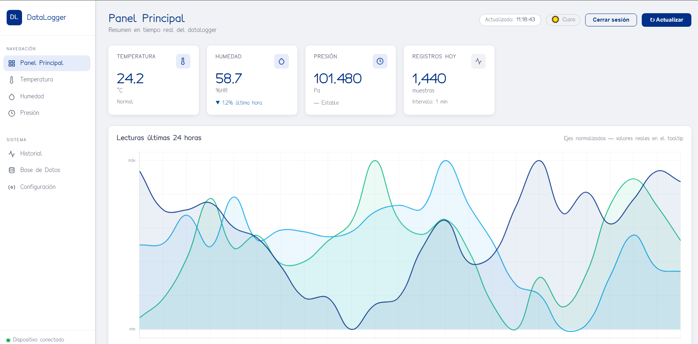

01 / UNA VISTA GENERAL
Panel principal / Dashboard
Temperatura, humedad y presión en tiempo real, reunidas en el punto de entrada al sistema.

- Gráfico de evolución para comparar las variables.
- Conteo de registros diarios y referencia del intervalo de muestreo.
- Consulta del estado del BME280, RTC, SD y WiFi.